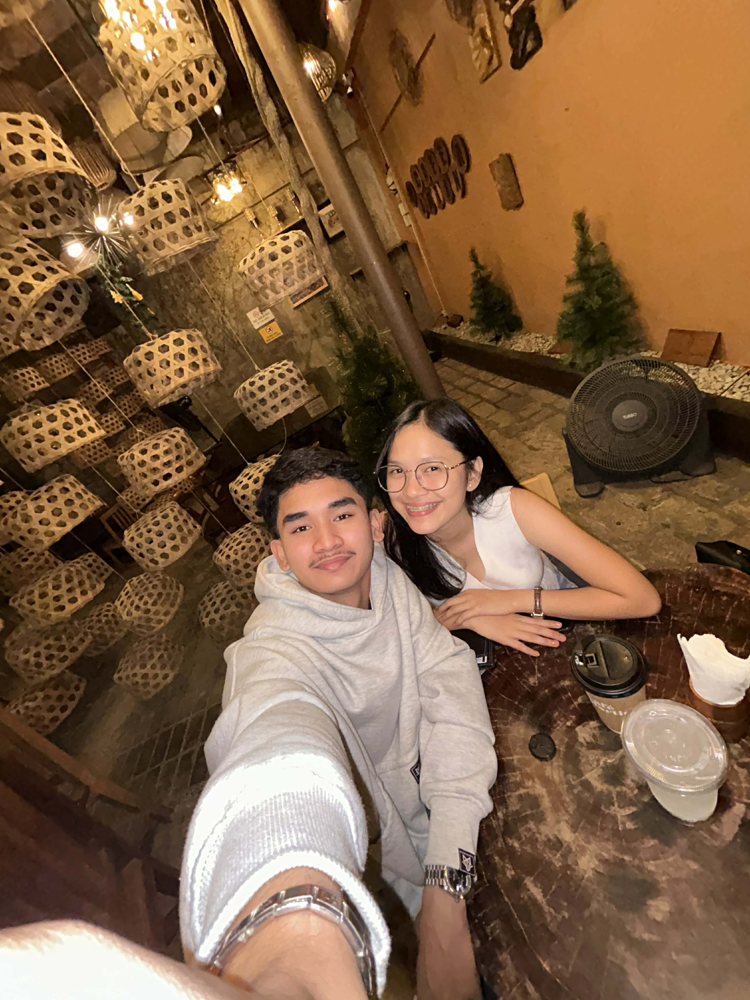
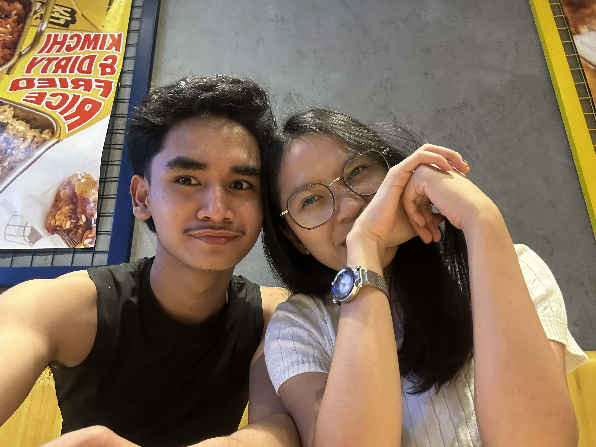
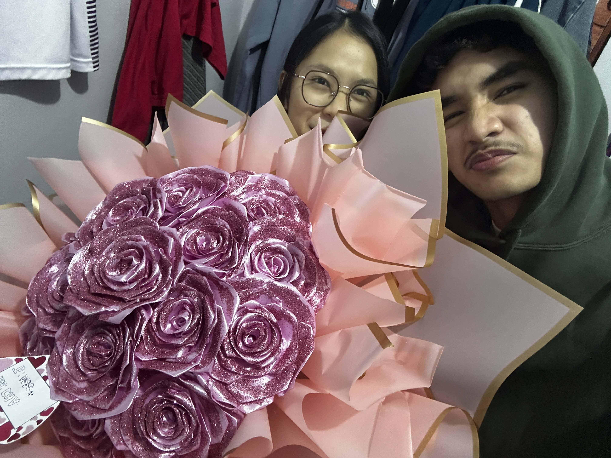

Your browser does not support the audio element.


CLICK HERE
— hi bae —
🎵
you make it right ♪
🎶
Will you be my Valentine? 💌
💖 YES
💔 NO
opss where are you going NO ...

See you tom baby!
Happy Valentine!
Close
❤️
❤️❤️